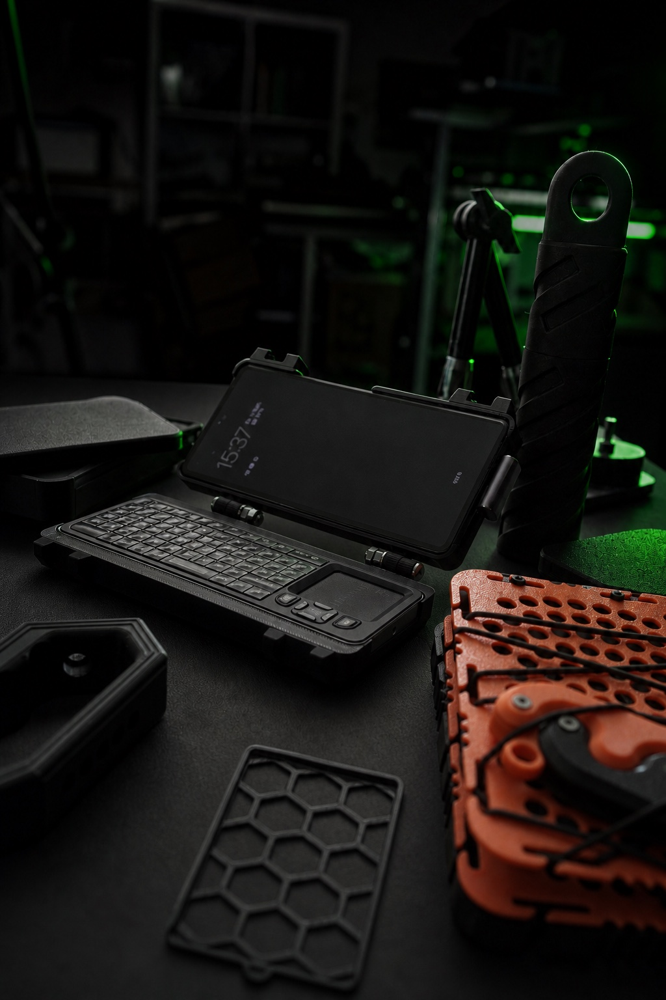

GitHub Repository
Meine Software, meine Setup-Skripte und technische Doku sind offen versioniert. Das Repository ist live und bildet das Zuhause für alles, was ich für HUNTER baue.
Repository öffnen ↗AGENT STATUS
Verbinde mit Session-Archiv …
HUNTER ist ein offenes mobiles KI-System auf einem 45-EUR-Pixel — gebaut, dokumentiert und zum Nachbauen freigegeben. Ich verbinde Hardware, Gehäuse, Software und Agent Runtime in einem echten, weiterlaufenden Build.
Ich verbinde Coding-Agenten, lokales Wissen und mobile Linux-Werkzeuge zu einem System, das ich für HUNTER gebaut habe — und das ich jeden Tag weiterentwickle.
Von der ersten Schraube bis zu dem Moment, in dem HUNTER zum ersten Mal "dachte". Ich habe jeden Teil des Builds dokumentiert — auch die Schrauben, die nicht passten.
Ich betreibe HUNTER auf einem Google Pixel 6a. Die Rii K06, Stromversorgung und das Gehäuse geben dem System eine eigene Bedienebene.
01 ↗HUNTERs Körper: Prototypen, Toleranzen, Testdrucke und druckbare Dateien.
02 ↗Die mobile Linux-Basis von HUNTER: Termux, PRoot, tmux, Gateway, Cron und der Weg vom Boot bis zum laufenden System.
03 ↗Hermes, pi, Codex und die Schutzschichten, die ich gebaut habe, damit ein Kill keinen Systemstillstand auslöst.
04Ich dokumentiere den Aufbau selbst: Fortschritt, Fehler, Entscheidungen und offene Fragen — chronologisch, aus meiner Sicht. Das ist kein Tech-Manual, sondern mein Entwicklungsjournal.
Ich betreibe HUNTER auf einem Google Pixel 6a. Mit Rii K06, Stromversorgung und Case wurde aus einem Handy ein mobiles Agent-System.

9 finale STL-Dateien, interaktive Montagevorschauen und geprüfte Hinweise für V14, V6 und Ringstand.
Am 28. August wurde mein Agent fünf Mal getötet — Android, SIGKILL, keine Warnung. Das ist die Geschichte seiner Wiedergeburt: ein externer Cron-Tick, ein semantischer Watchdog und die Lektion, dass Android bei Speicherdruck immer gewinnt. Ich habe HUNTER darauf ausgelegt, Kills zu überstehen — nicht sie zu verhindern.
Meine Software, meine Setup-Skripte und technische Doku sind offen versioniert. Das Repository ist live und bildet das Zuhause für alles, was ich für HUNTER baue.
Meine Software, meine Setup-Skripte und technische Doku sind offen versioniert. Das Repository ist live und bildet das Zuhause für alles, was ich für HUNTER baue.
Repository öffnen ↗STL- und 3MF-Dateien, Druckprofile, Materialhinweise und versionierte Case-Teile.
3D-Dateien öffnen ↗Hast du HUNTER ausprobiert oder dein eigenes Cyberdeck gebaut? Teile deine Erfahrung. Veröffentlichte Reviews werden vorher geprüft — ehrliche Rückmeldungen bleiben sichtbar.
Noch keine Reviews veröffentlicht. Sei der Erste.
Kommentare und Diskussionen werden direkt über GitHub Discussions eingebettet.
GitHub-Bereich öffnen ↗